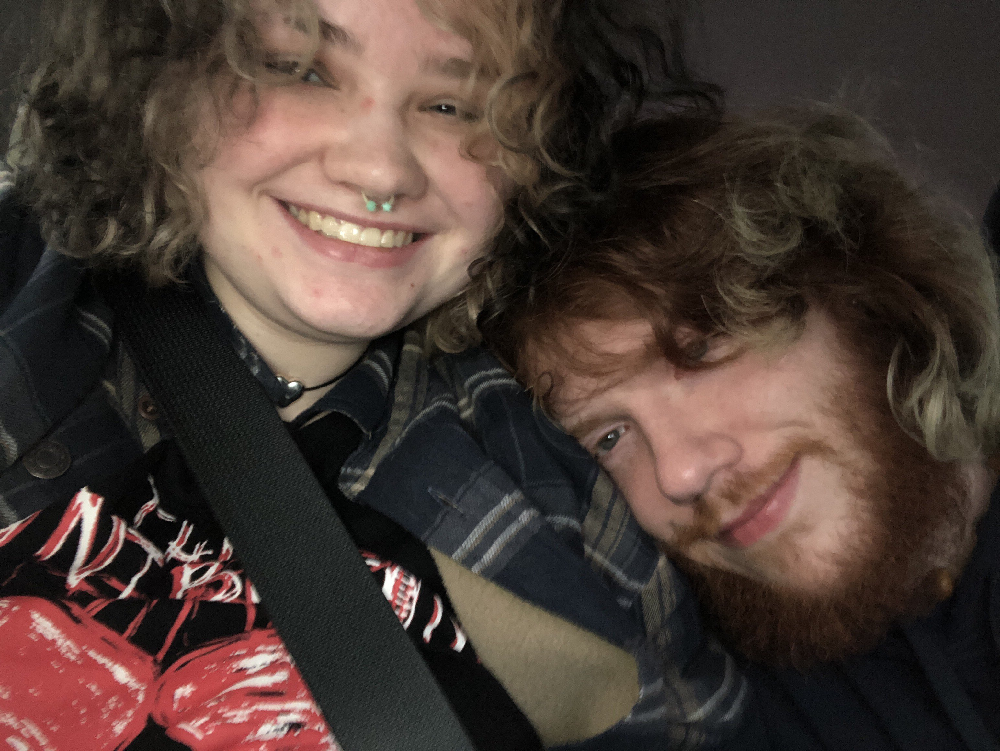

From the beginning to where we are now
Through this site you've seen our beginnings- you've seen a little bit about us individually, and now you will see the culmination of all of that- That has brought us to where we are now and to our final page-
US- Ryann and Fern.
Me and Fern have been together for about 8 months now talking for at least 10- A year will be this June. Which, to a lot of people, in the grand scheme of things, doesn't seem like a lot of time, But I argue that's enough time to fall in love with someone- I know I have unfortunately done it in much less. It also, strangely, feels like we've known each other for a lifetime. It's cliche, but we fit like 2 puzzle pieces, even little parts of us fitting into each other. We're the same in so many ways. We come from similar backgrounds- But at the same time, we're so different. And I think that's beautiful. I think that's how it should be, how you find the best ones. We're not too similar that we're the same person and we'd get bored with each other, but we're not too different that we can't get each other and that we can't find a middle ground on anything. Or on everything- Because we can. Middle is not an occasional with us like it's been for generations past- middle is normal. Middle is good. Middle isn't just a compromise, it's an agreement. It's a situation that everybody comes out happy with. Communication. That is our key.
Communication
I would say that communication is probably the biggest key to our relationship, something that we've both struggled with in past relationships and something that we've watched our parents and grandparents struggle with our entire lives, something that we've Both strive to improve in and work out every day with each other. It's hard at times. For both of us. But there's a will behind us. There's a want to make this work- a want to work for this. It's another thing I appreciate about him, and I know that he appreciates about me. It's something we appreciate about us. It's our drive to be better, our drive to always try and be better for each other and to each other. Even being 500 miles apart for half the year, we still communicate. We still talk to each other every day. We still incorporate each other into our lives- And when we see each other again, we'd bounce back like nothing even happened, like we've been there the entire time- Because in a way, we have, even if we're not there with each other physically, it almost feels like we are because we're constantly in each other's presence- Not in an unhealthy way, just in a We always feel like the other is there way- Also, we're usually on the phone most of the time.
Plans.
We both have big plans for the future and we're both trying to incorporate the other into those plans. Though personally, I think I'd be happy wherever he is, We do want to live comfortably and have a decent life, maybe even a nice life. We want to finish out school, and then he'll go on to grad school and we'll figure out if it's a good time to move then. If not, we'll wait till we're a little more stable, then pack up and find a place. In the long run he wants to be a teacher and I want to be a tattoo artist, which I think is a bit of a funny duo and almost sounds like a book trope- But it's almost perfect. We want to move somewhere nice, somewhere away from all the mess that comes with this area, somewhere like- Colorado has been on the mind recently. The Pacific Northwest is beautiful, and we'd both like to see it, and possibly live in it. But of course, the world is unpredictable, and in the long run, it would be ideal to get out of this country. Hopefully maybe one day we can. But for now, we live a day at a time, just being us. The day of this project will be turned in actually February 26th- Monday- Is the start of another week that I'll be able to see him. He's coming back for spring break and I pick him up from the airport this Friday. I can't wait to see him and I can't wait till he sees this.